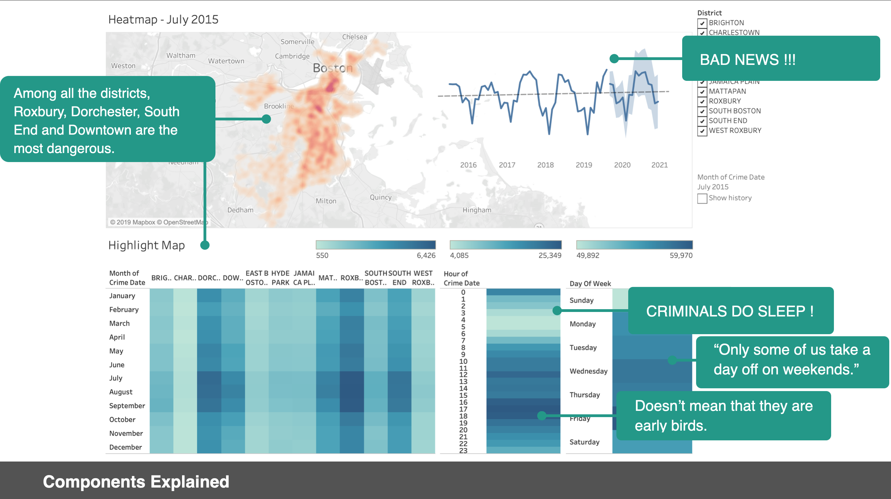

Dataset is crucial when it comes to any visualization. I chose to go with the most comprehensive and trusted one on the government website of Boston. The dataset was updated till October this year and focus only on the crimes taken place in Boston area. The dataset has longitude and latitude data and also district data to make it handy when analyzing crime patterns in different area in Boston.
Data Cleaning:
We removed data with invalid or unmatched location so that every single row of data make sense.
Then we removed data for October 2019 cause the data for this month is not complete. Now that the data covers complete months throughout the dataset

From the highlight map and the heat map, we can have a rough idea of how many crimes take place in different areas in Boston. Among all the districts, Roxbury, Dorchester, South End and Downtown at the top right-hand corner are the most dangerous.
Also we can see that crimes happens more often during July, August and September. Unfortunately, the best seasons in Boston .

Then let's take a look at criminals’ time schedule. The graph shows that the crime rate is much lower during midnight times. Criminals do sleep as well! And that doesn’t means that they are early birds as the crime rate reaches its peak at around 4-6 o’ clock.
How about different days in a week then, we can see that crime rates did decrease a little bit on weekends. Not much according to the legend, but still makes a good excuse for a downtown trip out during the weekends.
In terms of the prediction on whether Boston has became safer and will be safer in the future. The prediction shows an upward trend in crime rate for the coming two years, so take care ladies and gentlemen.